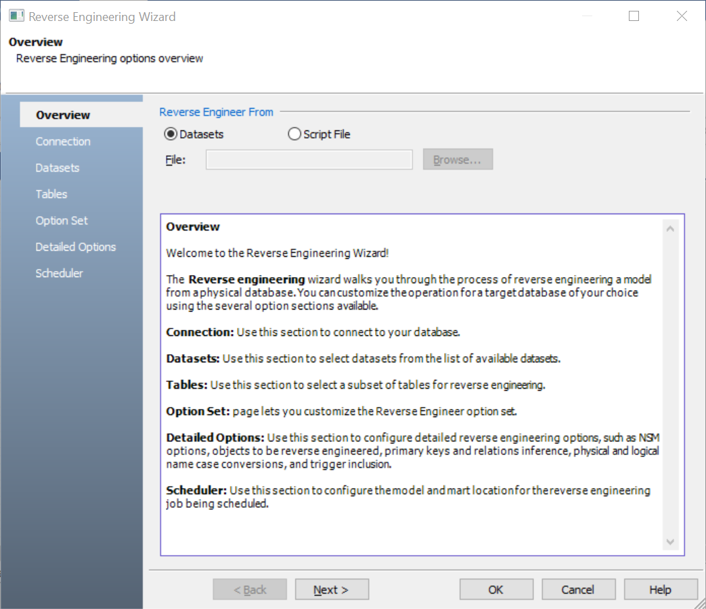

In erwin Data Modeler (DM), click Actions > Reverse Engineer.
The New Model screen appears.
Click Logical/Physical and set Database to Google BigQuery.
Click Next.
The Reverse Engineering Wizard appears.

Click one of the following options:
-
Datasets: Use this option to reverse engineer a model from your dataset.
If you click Datasets, continue to step 5.
-
Script File: Use this option to reverse engineer a model from a script. Selecting this option enables the File field. Click Browse and select the necessary script file.
If you click Script File, see step 13 below.
The Connection tab appears.
The following table explains the connection parameters.
Click Connect.
On successful connection, your connection information is displayed under Recent Connections.

Click Next.
The Datasets tab appears. It displays a list of available datasets.
 .
.
This moves the selected datasets under Selected Datasets.
Click Next.
The Tables tab appears. It displays a list of available tables in the datasets that you selected in step 8.
Click Next.
The Option Set tab appears. It displays the default option set. You can either use the default or a custom option set.
Click Next.
The Detail Options tab appears. Set up appropriate options based on your requirement.
Click OK.
The reverse engineering process starts.
Once the process is complete, based on your selections, a schema is generated and a model is created.